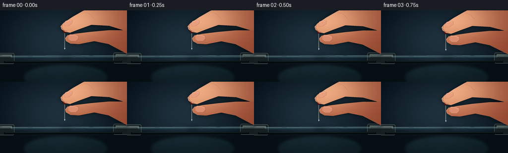
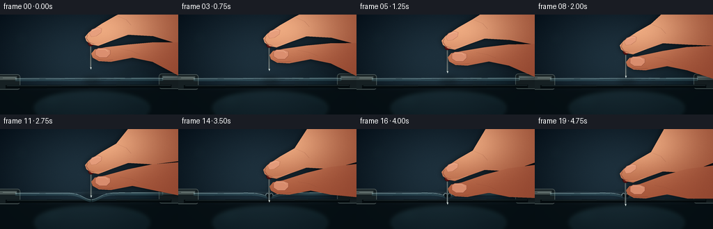
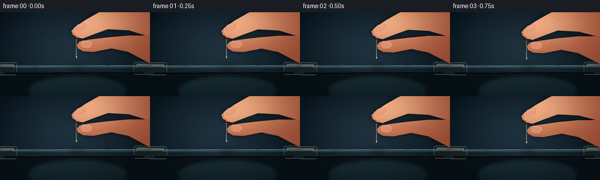
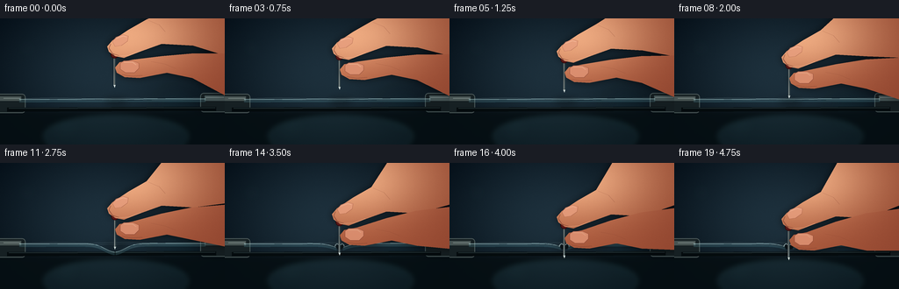
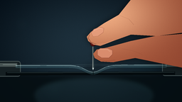
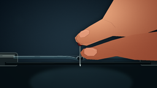

CODING AGENTS AS PIXEL WORLD MODELS
traex/GPT-5.6-Sol · mechanics_0032
点击播放 · 原生 RGB 像素
逐轮保存的候选
回放视频、检查图与代码变化。
每份候选均可单独播放。实际图片检查记录在下方工具轨迹中。
候选 01播放与检查图
点击播放 · 原生 RGB 像素


展开代码变化
--- 上一保存版本
+++ 本次保存版本
@@ -0,0 +1,203 @@
+from pathlib import Path
+import math
+import numpy as np
+from PIL import Image, ImageDraw, ImageFilter
+import artifact_io
+
+W,H,N = 256,144,20
+S=4
+WW,HH=W*S,H*S
+rng=np.random.default_rng(32026)
+
+def sc(v): return int(round(v*S))
+def pts(seq): return [(sc(x),sc(y)) for x,y in seq]
+
+def bezier(p0,p1,p2,p3,n=18):
+ out=[]
+ for t in np.linspace(0,1,n,endpoint=False):
+ u=1-t
+ out.append((u**3*p0[0]+3*u*u*t*p1[0]+3*u*t*t*p2[0]+t**3*p3[0],
+ u**3*p0[1]+3*u*u*t*p1[1]+3*u*t*t*p2[1]+t**3*p3[1]))
+ return out
+
+def skin_layer(size, shape, base=(188,112,76), light=(239,174,132), seed=0):
+ mask=Image.new('L',size,0); d=ImageDraw.Draw(mask)
+ d.polygon(pts(shape),fill=255)
+ yy,xx=np.mgrid[0:HH,0:WW]
+ # warm directional skin shading, softly lit from upper left
+ glow=np.exp(-(((xx/S-148)/82)**2+((yy/S-20)/48)**2))
+ side=np.clip((xx/S-120)/150,0,1)
+ r=base[0]+(light[0]-base[0])*glow-25*side
+ g=base[1]+(light[1]-base[1])*glow-18*side
+ b=base[2]+(light[2]-base[2])*glow-11*side
+ grain=np.random.default_rng(seed).normal(0,1.5,(HH,WW))
+ arr=np.stack([r+grain,g+grain*.75,b+grain*.55],2).clip(0,255).astype(np.uint8)
+ im=Image.fromarray(arr,'RGB').convert('RGBA'); im.putalpha(mask)
+ return im
+
+def draw_line(draw, xy, fill, width):
+ draw.line(pts(xy),fill=fill,width=max(1,sc(width)),joint='curve')
+
+def render(i):
+ t=i/(N-1)
+ p=t*t*(3-2*t)
+ move=32*p
+ needle_x=130.5 + 0.35*math.sin(t*math.pi)
+ tip_y=79.0+move
+ baseline=92.0
+ punct=max(0,min(1,(p-.61)/.25))
+ # Background: cinematic teal-black radial illumination and subtle grain
+ yy,xx=np.mgrid[0:HH,0:WW]
+ X=xx/S; Y=yy/S
+ radial=np.exp(-(((X-116)/112)**2+((Y-62)/82)**2))
+ vign=np.clip(((X-128)/165)**2+((Y-70)/110)**2,0,1)
+ noise=rng.normal(0,0.9,(HH,WW))
+ arr=np.empty((HH,WW,3),np.float32)
+ arr[...,0]=10+19*radial-8*vign+noise
+ arr[...,1]=20+28*radial-9*vign+noise
+ arr[...,2]=26+34*radial-7*vign+noise
+ base=Image.fromarray(arr.clip(0,255).astype(np.uint8),'RGB').convert('RGBA')
+ # out-of-focus lab highlights / bokeh
+ bokeh=Image.new('RGBA',(WW,HH),(0,0,0,0)); bd=ImageDraw.Draw(bokeh)
+ for cx,cy,r,c in [(31,34,11,(55,106,112,20)),(220,25,18,(92,132,128,17)),(74,121,18,(50,99,103,18)),(201,105,27,(20,68,76,22))]:
+ bd.ellipse((sc(cx-r),sc(cy-r),sc(cx+r),sc(cy+r)),fill=c)
+ bokeh=bokeh.filter(ImageFilter.GaussianBlur(sc(8))); base.alpha_composite(bokeh)
+ # bench below the sheet
+ bench=Image.new('RGBA',(WW,HH),(0,0,0,0)); d=ImageDraw.Draw(bench)
+ d.rectangle((0,sc(106),WW,HH),fill=(5,14,18,235))
+ # broad reflection on bench
+ d.ellipse((sc(50),sc(111),sc(214),sc(158)),fill=(23,45,48,75))
+ bench=bench.filter(ImageFilter.GaussianBlur(sc(3))); base.alpha_composite(bench)
+ # stretched-film holder: clamps and the lower rim, deliberately in focus
+ rig=Image.new('RGBA',(WW,HH),(0,0,0,0)); d=ImageDraw.Draw(rig)
+ d.rounded_rectangle((sc(-8),sc(86),sc(29),sc(108)),radius=sc(4),fill=(22,32,35,255),outline=(83,96,95,220),width=sc(1))
+ d.rectangle((sc(-2),sc(89),sc(24),sc(94)),fill=(77,89,87,230))
+ d.line(pts([(4,91),(23,91)]),fill=(153,166,159,180),width=sc(1))
+ d.rounded_rectangle((sc(228),sc(85),sc(264),sc(107)),radius=sc(4),fill=(20,29,32,255),outline=(76,91,91,220),width=sc(1))
+ d.rectangle((sc(233),sc(88),sc(258),sc(94)),fill=(72,87,87,230))
+ d.line(pts([(234,90),(255,90)]),fill=(150,166,162,170),width=sc(1))
+ # front support lip
+ d.line(pts([(8,104),(246,103)]),fill=(3,9,11,220),width=sc(5))
+ d.line(pts([(10,102.5),(245,101.7)]),fill=(49,65,65,180),width=sc(1))
+ base.alpha_composite(rig)
+
+ # Film deformation. Before puncture it follows the needle in a smooth elastic dimple.
+ contact=max(0,tip_y-baseline)
+ maxdent=min(contact,9.8)
+ if punct>0:
+ maxdent=9.8*(1-punct)+2.7*punct
+ hole=0.15+4.0*punct
+ xs=np.linspace(22,234,425)
+ sigma=16-3*punct
+ dent=maxdent*np.exp(-((xs-needle_x)/sigma)**2)
+ # tiny broad sag makes a recognizable stretched sheet rather than a wire
+ ytop=baseline + dent + .25*np.cos((xs-22)/212*math.pi)
+ ybot=ytop+3.15
+ film=Image.new('RGBA',(WW,HH),(0,0,0,0)); fd=ImageDraw.Draw(film)
+ if punct<=0:
+ poly=list(zip(xs,ytop))+list(zip(xs[::-1],ybot[::-1]))
+ fd.polygon(pts(poly),fill=(107,166,177,53))
+ draw_line(fd,list(zip(xs,ytop)),(186,229,232,150),.75)
+ draw_line(fd,list(zip(xs,ybot)),(61,119,130,85),.6)
+ else:
+ # Two torn halves; their lips remain tucked slightly down around the shaft.
+ left=xs[xs<=needle_x-hole]; right=xs[xs>=needle_x+hole]
+ for side,xxs in [('L',left),('R',right)]:
+ dd=maxdent*np.exp(-((xxs-needle_x)/sigma)**2)
+ top=baseline+dd+.25*np.cos((xxs-22)/212*math.pi)
+ # curling torn lip, stronger close to the puncture
+ edge=np.exp(-np.abs(xxs-needle_x)/5)
+ top += (2.8*punct)*edge
+ bot=top+3.15
+ poly=list(zip(xxs,top))+list(zip(xxs[::-1],bot[::-1]))
+ fd.polygon(pts(poly),fill=(104,166,178,55))
+ draw_line(fd,list(zip(xxs,top)),(192,232,234,165),.8)
+ draw_line(fd,list(zip(xxs,bot)),(61,121,131,85),.6)
+ # dark aperture under the clear film and bright, curled fracture lips
+ fd.ellipse((sc(needle_x-hole-.5),sc(93.0),sc(needle_x+hole+.5),sc(98.6)),fill=(2,9,12,int(180*punct)))
+ fd.arc((sc(needle_x-hole-2),sc(92),sc(needle_x),sc(101)),200,320,fill=(224,248,247,int(210*punct)),width=sc(1))
+ fd.arc((sc(needle_x),sc(92),sc(needle_x+hole+2),sc(101)),220,340,fill=(224,248,247,int(210*punct)),width=sc(1))
+ # specular streaks and radial tension wrinkles in the plastic
+ for off,alpha in [(-1,90),(1,70)]:
+ xseg=np.linspace(28,228,180)
+ yseg=baseline+off+(.4*np.sin(xseg/13))
+ draw_line(fd,list(zip(xseg,yseg)),(192,228,230,alpha),.35)
+ stress=min(1,maxdent/8)
+ for sign in (-1,1):
+ for k in range(3):
+ x0=needle_x+sign*(7+k*4); x1=needle_x+sign*(22+k*10)
+ y0=baseline+maxdent*np.exp(-((x0-needle_x)/sigma)**2)+1.0
+ y1=baseline+0.5+k*.34
+ draw_line(fd,[(x0,y0),(x1,y1)],(206,239,237,int((64-9*k)*stress)),.45)
+ base.alpha_composite(film)
+
+ # Soft needle shadow cast on film
+ shadow=Image.new('RGBA',(WW,HH),(0,0,0,0)); sd=ImageDraw.Draw(shadow)
+ sd.ellipse((sc(needle_x-12),sc(91),sc(needle_x+15),sc(99)),fill=(0,0,0,85))
+ shadow=shadow.filter(ImageFilter.GaussianBlur(sc(4))); base.alpha_composite(shadow)
+
+ # Steel pin, held nearly vertical. Its point only appears under the film after rupture.
+ pin=Image.new('RGBA',(WW,HH),(0,0,0,0)); pd=ImageDraw.Draw(pin)
+ top_y=41.0+move
+ # dark edge plus cool highlight produces a cylindrical shaft
+ draw_line(pd,[(needle_x-.15,top_y),(needle_x-.15,tip_y-2.6)],(35,43,45,255),2.25)
+ draw_line(pd,[(needle_x-.65,top_y),(needle_x-.65,tip_y-2.5)],(220,232,228,255),.62)
+ draw_line(pd,[(needle_x+.45,top_y),(needle_x+.45,tip_y-2.5)],(91,113,116,255),.55)
+ pd.polygon(pts([(needle_x-1.15,tip_y-3),(needle_x+1.05,tip_y-3),(needle_x,tip_y)]),fill=(212,224,221,255))
+ # red glass pin head, partly between fingertips
+ pd.ellipse((sc(needle_x-4.4),sc(top_y-4.2),sc(needle_x+4.4),sc(top_y+4.5)),fill=(111,23,24,255),outline=(49,12,13,255),width=sc(.7))
+ pd.ellipse((sc(needle_x-2.6),sc(top_y-2.9),sc(needle_x+.5),sc(top_y+.1)),fill=(245,105,87,210))
+ pd.ellipse((sc(needle_x-1.8),sc(top_y-2.4),sc(needle_x-.3),sc(top_y-1)),fill=(255,207,179,220))
+ base.alpha_composite(pin)
+
+ # Hand silhouette shadow (follows the pin in one continuous, slow press)
+ dy=move
+ hand_shadow=Image.new('RGBA',(WW,HH),(0,0,0,0)); hs=ImageDraw.Draw(hand_shadow)
+ index_shape=[(265,-9),(190,-8),(167,1+dy),(146,13+dy),(128,25+dy),(122,32+dy),(124,38+dy),(131,43+dy),(141,45+dy),(159,38+dy),(184,29+dy),(220,31+dy),(265,45)]
+ thumb_shape=[(264,40+dy*.35),(218,40+dy*.55),(184,43+dy*.75),(151,47+dy),(136,50+dy),(131,56+dy),(133,62+dy),(142,67+dy),(159,68+dy),(190,62+dy),(219,68+dy),(264,92+dy*.25)]
+ hs.polygon(pts(index_shape),fill=(0,0,0,145)); hs.polygon(pts(thumb_shape),fill=(0,0,0,145))
+ hand_shadow=hand_shadow.filter(ImageFilter.GaussianBlur(sc(4))); base.alpha_composite(hand_shadow)
+
+ # Index finger from upper right. Shape points intentionally rounded by overlaying at 4x.
+ index_layer=skin_layer((WW,HH),index_shape,base=(173,92,61),light=(242,173,130),seed=500+i)
+ base.alpha_composite(index_layer)
+ hd=Image.new('RGBA',(WW,HH),(0,0,0,0)); dd=ImageDraw.Draw(hd)
+ # fingertip contour and crease, plus fine warm bounce along underside
+ draw_line(dd,[(126,29+dy),(124,34+dy),(128,40+dy),(137,43+dy)],(117,57,42,150),.65)
+ draw_line(dd,[(132,43+dy),(147,42+dy),(160,37+dy)],(253,194,151,115),.75)
+ draw_line(dd,[(169,2+dy),(181,7+dy),(188,15+dy)],(125,62,46,72),.55)
+ # index fingernail, naturally foreshortened
+ nailpoly=[(128,26+dy),(132,21+dy),(140,18+dy),(146,20+dy),(145,26+dy),(138,31+dy),(131,32+dy)]
+ dd.polygon(pts(nailpoly),fill=(230,157,125,210))
+ draw_line(dd,nailpoly+[nailpoly[0]],(149,78,62,125),.55)
+ draw_line(dd,[(132,23+dy),(140,20+dy),(144,21+dy)],(255,205,178,150),.7)
+ base.alpha_composite(hd)
+
+ # Thumb in front, pinched around the pin head
+ thumb_layer=skin_layer((WW,HH),thumb_shape,base=(169,87,58),light=(235,158,116),seed=900+i)
+ base.alpha_composite(thumb_layer)
+ td=Image.new('RGBA',(WW,HH),(0,0,0,0)); dd=ImageDraw.Draw(td)
+ # broad thumbnail near the grip
+ nail=[(137,51+dy),(141,48+dy),(151,48+dy),(158,51+dy),(158,57+dy),(153,62+dy),(143,62+dy),(137,58+dy)]
+ dd.polygon(pts(nail),fill=(222,146,115,220))
+ draw_line(dd,nail+[nail[0]],(127,62,50,140),.6)
+ draw_line(dd,[(141,50+dy),(151,50+dy),(155,53+dy)],(255,201,169,145),.75)
+ draw_line(dd,[(139,64+dy),(150,66+dy),(162,65+dy)],(111,51,38,100),.7)
+ draw_line(dd,[(172,49+dy),(188,52+dy),(200,57+dy)],(113,53,40,62),.55)
+ # contact occlusion where fingers actually pinch the head
+ dd.ellipse((sc(127.5),sc(top_y-1.0),sc(130.0),sc(top_y+3.0)),fill=(88,39,31,90))
+ base.alpha_composite(td)
+
+ # A very restrained cinematic bloom on membrane/pin contact
+ if contact>0:
+ glow=Image.new('RGBA',(WW,HH),(0,0,0,0)); gd=ImageDraw.Draw(glow)
+ gd.ellipse((sc(needle_x-5),sc(baseline-3),sc(needle_x+5),sc(baseline+7)),fill=(173,229,228,int(22*min(1,contact/5))))
+ glow=glow.filter(ImageFilter.GaussianBlur(sc(4))); base.alpha_composite(glow)
+ # downsample gives clean photographic antialiasing
+ out=base.convert('RGB').resize((W,H),Image.Resampling.LANCZOS)
+ # slight crispness without flicker
+ return np.asarray(out,dtype=np.uint8)
+
+frames=np.stack([render(i) for i in range(N)],axis=0)
+artifact_io.save(frames,Path(__file__).resolve().parent)
+print('saved',frames.shape,frames.dtype)
候选 02播放与检查图
点击播放 · 原生 RGB 像素


展开代码变化
--- 上一保存版本
+++ 本次保存版本
@@ -7,7 +7,7 @@
W,H,N = 256,144,20
S=4
WW,HH=W*S,H*S
-rng=np.random.default_rng(32026)
+background_noise=np.random.default_rng(32026).normal(0,0.9,(HH,WW))
def sc(v): return int(round(v*S))
def pts(seq): return [(sc(x),sc(y)) for x,y in seq]
@@ -51,7 +51,8 @@
X=xx/S; Y=yy/S
radial=np.exp(-(((X-116)/112)**2+((Y-62)/82)**2))
vign=np.clip(((X-128)/165)**2+((Y-70)/110)**2,0,1)
- noise=rng.normal(0,0.9,(HH,WW))
+ # Keep the sensor grain fixed so only the physical action moves.
+ noise=background_noise
arr=np.empty((HH,WW,3),np.float32)
arr[...,0]=10+19*radial-8*vign+noise
arr[...,1]=20+28*radial-9*vign+noise
@@ -159,7 +160,7 @@
hand_shadow=hand_shadow.filter(ImageFilter.GaussianBlur(sc(4))); base.alpha_composite(hand_shadow)
# Index finger from upper right. Shape points intentionally rounded by overlaying at 4x.
- index_layer=skin_layer((WW,HH),index_shape,base=(173,92,61),light=(242,173,130),seed=500+i)
+ index_layer=skin_layer((WW,HH),index_shape,base=(173,92,61),light=(242,173,130),seed=500)
base.alpha_composite(index_layer)
hd=Image.new('RGBA',(WW,HH),(0,0,0,0)); dd=ImageDraw.Draw(hd)
# fingertip contour and crease, plus fine warm bounce along underside
@@ -174,7 +175,7 @@
base.alpha_composite(hd)
# Thumb in front, pinched around the pin head
- thumb_layer=skin_layer((WW,HH),thumb_shape,base=(169,87,58),light=(235,158,116),seed=900+i)
+ thumb_layer=skin_layer((WW,HH),thumb_shape,base=(169,87,58),light=(235,158,116),seed=900)
base.alpha_composite(thumb_layer)
td=Image.new('RGBA',(WW,HH),(0,0,0,0)); dd=ImageDraw.Draw(td)
# broad thumbnail near the grip
可观测工具轨迹
实际执行的命令与返回图片。
命令 1exit 0
/bin/bash -lc "cat prompt.txt && printf '\\n---RULES---\\n' && cat GENERATION_RULES.md && printf '\\n---SPEC---\\n' && cat task_spec.json"
命令 2exit 0
/bin/bash -lc "find . -maxdepth 2 -type f -printf '%p\\n' | sort"
命令 3exit 0
/bin/bash -lc "command -v ffmpeg; command -v blender; command -v python3; python3 - <<'PY' mods=['PIL','numpy','cv2','imageio'] for m in mods: try: x=__import__(m); print(m,'OK',getattr(x,'__version__','')) except Exception as e: print(m,'NO',e) PY"
命令 4exit 0
/bin/bash -lc 'cat artifact_io.py'
命令 5exit 0
/bin/bash -lc "cat > generate.py <<'PY'
from pathlib import Path
import math
import numpy as np
from PIL import Image, ImageDraw, ImageFilter
import artifact_io
W,H,N = 256,144,20
S=4
WW,HH=W*S,H*S
rng=np.random.default_rng(32026)
def sc(v): return int(round(v*S))
def pts(seq): return [(sc(x),sc(y)) for x,y in seq]
def bezier(p0,p1,p2,p3,n=18):
out=[]
for t in np.linspace(0,1,n,endpoint=False):
u=1-t
out.append((u**3*p0[0]+3*u*u*t*p1[0]+3*u*t*t*p2[0]+t**3*p3[0],
u**3*p0[1]+3*u*u*t*p1[1]+3*u*t*t*p2[1]+t**3*p3[1]))
return out
def skin_layer(size, shape, base=(188,112,76), light=(239,174,132), seed=0):
mask=Image.new('L',size,0); d=ImageDraw.Draw(mask)
d.polygon(pts(shape),fill=255)
yy,xx=np.mgrid[0:HH,0:WW]
# warm directional skin shading, softly lit from upper left
glow=np.exp(-(((xx/S-148)/82)**2+((yy/S-20)/48)**2))
side=np.clip((xx/S-120)/150,0,1)
r=base[0]+(light[0]-base[0])*glow-25*side
g=base[1]+(light[1]-base[1])*glow-18*side
b=base[2]+(light[2]-base[2])*glow-11*side
grain=np.random.default_rng(seed).normal(0,1.5,(HH,WW))
arr=np.stack([r+grain,g+grain*.75,b+grain*.55],2).clip(0,255).astype(np.uint8)
im=Image.fromarray(arr,'RGB').convert('RGBA'); im.putalpha(mask)
return im
def draw_line(draw, xy, fill, width):
draw.line(pts(xy),fill=fill,width=max(1,sc(width)),joint='curve')
def render(i):
t=i/(N-1)
p=t*t*(3-2*t)
move=32*p
needle_x=130.5 + 0.35*math.sin(t*math.pi)
tip_y=79.0+move
baseline=92.0
punct=max(0,min(1,(p-.61)/.25))
# Background: cinematic teal-black radial illumination and subtle grain
yy,xx=np.mgrid[0:HH,0:WW]
X=xx/S; Y=yy/S
radial=np.exp(-(((X-116)/112)**2+((Y-62)/82)**2))
vign=np.clip(((X-128)/165)**2+((Y-70)/110)**2,0,1)
noise=rng.normal(0,0.9,(HH,WW))
arr=np.empty((HH,WW,3),np.float32)
arr[...,0]=10+19*radial-8*vign+noise
arr[...,1]=20+28*radial-9*vign+noise
arr[...,2]=26+34*radial-7*vign+noise
base=Image.fromarray(arr.clip(0,255).astype(np.uint8),'RGB').convert('RGBA')
# out-of-focus lab highlights / bokeh
bokeh=Image.new('RGBA',(WW,HH),(0,0,0,0)); bd=ImageDraw.Draw(bokeh)
for cx,cy,r,c in [(31,34,11,(55,106,112,20)),(220,25,18,(92,132,128,17)),(74,121,18,(50,99,103,18)),(201,105,27,(20,68,76,22))]:
bd.ellipse((sc(cx-r),sc(cy-r),sc(cx+r),sc(cy+r)),fill=c)
bokeh=bokeh.filter(ImageFilter.GaussianBlur(sc(8))); base.alpha_composite(bokeh)
# bench below the sheet
bench=Image.new('RGBA',(WW,HH),(0,0,0,0)); d=ImageDraw.Draw(bench)
d.rectangle((0,sc(106),WW,HH),fill=(5,14,18,235))
# broad reflection on bench
d.ellipse((sc(50),sc(111),sc(214),sc(158)),fill=(23,45,48,75))
bench=bench.filter(ImageFilter.GaussianBlur(sc(3))); base.alpha_composite(bench)
# stretched-film holder: clamps and the lower rim, deliberately in focus
rig=Image.new('RGBA',(WW,HH),(0,0,0,0)); d=ImageDraw.Draw(rig)
d.rounded_rectangle((sc(-8),sc(86),sc(29),sc(108)),radius=sc(4),fill=(22,32,35,255),outline=(83,96,95,220),width=sc(1))
d.rectangle((sc(-2),sc(89),sc(24),sc(94)),fill=(77,89,87,230))
d.line(pts([(4,91),(23,91)]),fill=(153,166,159,180),width=sc(1))
d.rounded_rectangle((sc(228),sc(85),sc(264),sc(107)),radius=sc(4),fill=(20,29,32,255),outline=(76,91,91,220),width=sc(1))
d.rectangle((sc(233),sc(88),sc(258),sc(94)),fill=(72,87,87,230))
d.line(pts([(234,90),(255,90)]),fill=(150,166,162,170),width=sc(1))
# front support lip
d.line(pts([(8,104),(246,103)]),fill=(3,9,11,220),width=sc(5))
d.line(pts([(10,102.5),(245,101.7)]),fill=(49,65,65,180),width=sc(1))
base.alpha_composite(rig)
# Film deformation. Before puncture it follows the needle in a smooth elastic dimple.
contact=max(0,tip_y-baseline)
maxdent=min(contact,9.8)
if punct>0:
maxdent=9.8*(1-punct)+2.7*punct
hole=0.15+4.0*punct
xs=np.linspace(22,234,425)
sigma=16-3*punct
dent=maxdent*np.exp(-((xs-needle_x)/sigma)**2)
# tiny broad sag makes a recognizable stretched sheet rather than a wire
ytop=baseline + dent + .25*np.cos((xs-22)/212*math.pi)
ybot=ytop+3.15
film=Image.new('RGBA',(WW,HH),(0,0,0,0)); fd=ImageDraw.Draw(film)
if punct<=0:
poly=list(zip(xs,ytop))+list(zip(xs[::-1],ybot[::-1]))
fd.polygon(pts(poly),fill=(107,166,177,53))
draw_line(fd,list(zip(xs,ytop)),(186,229,232,150),.75)
draw_line(fd,list(zip(xs,ybot)),(61,119,130,85),.6)
else:
# Two torn halves; their lips remain tucked slightly down around the shaft.
left=xs[xs<=needle_x-hole]; right=xs[xs>=needle_x+hole]
for side,xxs in [('L',left),('R',right)]:
dd=maxdent*np.exp(-((xxs-needle_x)/sigma)**2)
top=baseline+dd+.25*np.cos((xxs-22)/212*math.pi)
# curling torn lip, stronger close to the puncture
edge=np.exp(-np.abs(xxs-needle_x)/5)
top += (2.8*punct)*edge
bot=top+3.15
poly=list(zip(xxs,top))+list(zip(xxs[::-1],bot[::-1]))
fd.polygon(pts(poly),fill=(104,166,178,55))
draw_line(fd,list(zip(xxs,top)),(192,232,234,165),.8)
draw_line(fd,list(zip(xxs,bot)),(61,121,131,85),.6)
# dark aperture under the clear film and bright, curled fracture lips
fd.ellipse((sc(needle_x-hole-.5),sc(93.0),sc(needle_x+hole+.5),sc(98.6)),fill=(2,9,12,int(180*punct)))
fd.arc((sc(needle_x-hole-2),sc(92),sc(needle_x),sc(101)),200,320,fill=(224,248,247,int(210*punct)),width=sc(1))
fd.arc((sc(needle_x),sc(92),sc(needle_x+hole+2),sc(101)),220,340,fill=(224,248,247,int(210*punct)),width=sc(1))
# specular streaks and radial tension wrinkles in the plastic
for off,alpha in [(-1,90),(1,70)]:
xseg=np.linspace(28,228,180)
yseg=baseline+off+(.4*np.sin(xseg/13))
draw_line(fd,list(zip(xseg,yseg)),(192,228,230,alpha),.35)
stress=min(1,maxdent/8)
for sign in (-1,1):
for k in range(3):
x0=needle_x+sign*(7+k*4); x1=needle_x+sign*(22+k*10)
y0=baseline+maxdent*np.exp(-((x0-needle_x)/sigma)**2)+1.0
y1=baseline+0.5+k*.34
draw_line(fd,[(x0,y0),(x1,y1)],(206,239,237,int((64-9*k)*stress)),.45)
base.alpha_composite(film)
# Soft needle shadow cast on film
shadow=Image.new('RGBA',(WW,HH),(0,0,0,0)); sd=ImageDraw.Draw(shadow)
sd.ellipse((sc(needle_x-12),sc(91),sc(needle_x+15),sc(99)),fill=(0,0,0,85))
shadow=shadow.filter(ImageFilter.GaussianBlur(sc(4))); base.alpha_composite(shadow)
# Steel pin, held nearly vertical. Its point only appears under the film after rupture.
pin=Image.new('RGBA',(WW,HH),(0,0,0,0)); pd=ImageDraw.Draw(pin)
top_y=41.0+move
# dark edge plus cool highlight produces a cylindrical shaft
draw_line(pd,[(needle_x-.15,top_y),(needle_x-.15,tip_y-2.6)],(35,43,45,255),2.25)
draw_line(pd,[(needle_x-.65,top_y),(needle_x-.65,tip_y-2.5)],(220,232,228,255),.62)
draw_line(pd,[(needle_x+.45,top_y),(needle_x+.45,tip_y-2.5)],(91,113,116,255),.55)
pd.polygon(pts([(needle_x-1.15,tip_y-3),(needle_x+1.05,tip_y-3),(needle_x,tip_y)]),fill=(212,224,221,255))
# red glass pin head, partly between fingertips
pd.ellipse((sc(needle_x-4.4),sc(top_y-4.2),sc(needle_x+4.4),sc(top_y+4.5)),fill=(111,23,24,255),outline=(49,12,13,255),width=sc(.7))
pd.ellipse((sc(needle_x-2.6),sc(top_y-2.9),sc(needle_x+.5),sc(top_y+.1)),fill=(245,105,87,210))
pd.ellipse((sc(needle_x-1.8),sc(top_y-2.4),sc(needle_x-.3),sc(top_y-1)),fill=(255,207,179,220))
base.alpha_composite(pin)
# Hand silhouette shadow (follows the pin in one continuous, slow press)
dy=move
hand_shadow=Image.new('RGBA',(WW,HH),(0,0,0,0)); hs=ImageDraw.Draw(hand_shadow)
index_shape=[(265,-9),(190,-8),(167,1+dy),(146,13+dy),(128,25+dy),(122,32+dy),(124,38+dy),(131,43+dy),(141,45+dy),(159,38+dy),(184,29+dy),(220,31+dy),(265,45)]
thumb_shape=[(264,40+dy*.35),(218,40+dy*.55),(184,43+dy*.75),(151,47+dy),(136,50+dy),(131,56+dy),(133,62+dy),(142,67+dy),(159,68+dy),(190,62+dy),(219,68+dy),(264,92+dy*.25)]
hs.polygon(pts(index_shape),fill=(0,0,0,145)); hs.polygon(pts(thumb_shape),fill=(0,0,0,145))
hand_shadow=hand_shadow.filter(ImageFilter.GaussianBlur(sc(4))); base.alpha_composite(hand_shadow)
# Index finger from upper right. Shape points intentionally rounded by overlaying at 4x.
index_layer=skin_layer((WW,HH),index_shape,base=(173,92,61),light=(242,173,130),seed=500+i)
base.alpha_composite(index_layer)
hd=Image.new('RGBA',(WW,HH),(0,0,0,0)); dd=ImageDraw.Draw(hd)
# fingertip contour and crease, plus fine warm bounce along underside
draw_line(dd,[(126,29+dy),(124,34+dy),(128,40+dy),(137,43+dy)],(117,57,42,150),.65)
draw_line(dd,[(132,43+dy),(147,42+dy),(160,37+dy)],(253,194,151,115),.75)
draw_line(dd,[(169,2+dy),(181,7+dy),(188,15+dy)],(125,62,46,72),.55)
# index fingernail, naturally foreshortened
nailpoly=[(128,26+dy),(132,21+dy),(140,18+dy),(146,20+dy),(145,26+dy),(138,31+dy),(131,32+dy)]
dd.polygon(pts(nailpoly),fill=(230,157,125,210))
draw_line(dd,nailpoly+[nailpoly[0]],(149,78,62,125),.55)
draw_line(dd,[(132,23+dy),(140,20+dy),(144,21+dy)],(255,205,178,150),.7)
base.alpha_composite(hd)
# Thumb in front, pinched around the pin head
thumb_layer=skin_layer((WW,HH),thumb_shape,base=(169,87,58),light=(235,158,116),seed=900+i)
base.alpha_composite(thumb_layer)
td=Image.new('RGBA',(WW,HH),(0,0,0,0)); dd=ImageDraw.Draw(td)
# broad thumbnail near the grip
nail=[(137,51+dy),(141,48+dy),(151,48+dy),(158,51+dy),(158,57+dy),(153,62+dy),(143,62+dy),(137,58+dy)]
dd.polygon(pts(nail),fill=(222,146,115,220))
draw_line(dd,nail+[nail[0]],(127,62,50,140),.6)
draw_line(dd,[(141,50+dy),(151,50+dy),(155,53+dy)],(255,201,169,145),.75)
draw_line(dd,[(139,64+dy),(150,66+dy),(162,65+dy)],(111,51,38,100),.7)
draw_line(dd,[(172,49+dy),(188,52+dy),(200,57+dy)],(113,53,40,62),.55)
# contact occlusion where fingers actually pinch the head
dd.ellipse((sc(127.5),sc(top_y-1.0),sc(130.0),sc(top_y+3.0)),fill=(88,39,31,90))
base.alpha_composite(td)
# A very restrained cinematic bloom on membrane/pin contact
if contact>0:
glow=Image.new('RGBA',(WW,HH),(0,0,0,0)); gd=ImageDraw.Draw(glow)
gd.ellipse((sc(needle_x-5),sc(baseline-3),sc(needle_x+5),sc(baseline+7)),fill=(173,229,228,int(22*min(1,contact/5))))
glow=glow.filter(ImageFilter.GaussianBlur(sc(4))); base.alpha_composite(glow)
# downsample gives clean photographic antialiasing
out=base.convert('RGB').resize((W,H),Image.Resampling.LANCZOS)
# slight crispness without flicker
return np.asarray(out,dtype=np.uint8)
frames=np.stack([render(i) for i in range(N)],axis=0)
artifact_io.save(frames,Path(__file__).resolve().parent)
print('saved',frames.shape,frames.dtype)
PY
python3 generate.py"命令 6exit 0
/bin/bash -lc "python3 - <<'PY'
import numpy as np
from pathlib import Path
z=np.load('pixels.npz')['pixels']
print(z.shape,z.dtype,'unique frame deltas',[int(np.count_nonzero(z[:,:,i]"'!=z[:,:,i-1])) for i in range(1,z.shape[2])])
for x in ['"'pixels.npz','index.html','inspection.png']:
p=Path(x); print(x,p.stat().st_size)
PY"命令 7exit 0
/bin/bash -lc "python3 generate.py && python3 - <<'PY'
from pathlib import Path
import json, numpy as np
s=json.loads(Path('task_spec.json').read_text()); a=np.load('pixels.npz')['pixels']
assert a.shape==(s['height'],s['width'],s['frames']) and a.dtype==np.uint32
assert len(list(Path('frames').glob('*.png')))==s['frames']
print('validated:',a.shape,'frames, artifacts complete')
PY"视觉工具实际返回图片 1

视觉工具实际返回图片 2

视觉工具实际返回图片 3

保存候选 2 份；完成命令 7 次；可验证图片返回 3 张。原始 API 响应与完整日志保留在本地。